很順利購買了13:40往木浦的船票, 接著在濟州港旅客碼頭二樓的食堂吃完滿意午餐, 休息了一會, 於下午一時負上背囊, 這韓國春天之旅的濟州島行程終於來到尾聲了, 也意味下半部份的韓國南部行程即將展開。
來了濟州島九天, 很多時間都是陰天和下雨, 給我的印象並不是太好, 但來到離開的一刻, 卻有依依不捨的感覺, 畢竟, 我和她在這裡曾經渡過了一段美好的時光。
離開食堂, 步行往二樓的登船閘口。
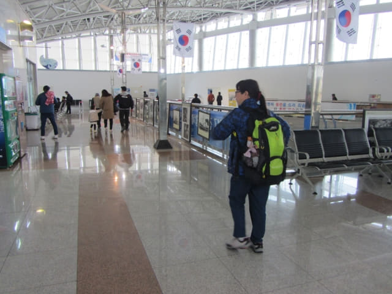
按標示走到1號登船閘口, 進入前又要檢查護照。
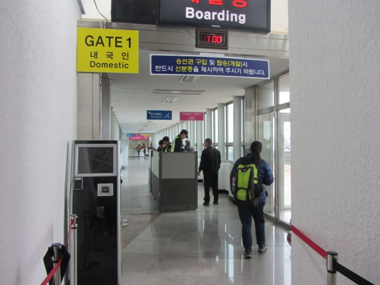
進入登船閘口, 向前走一會, 來到一個大堂, 這裡有一間免稅店舖, 很多旅客都忙於購物。
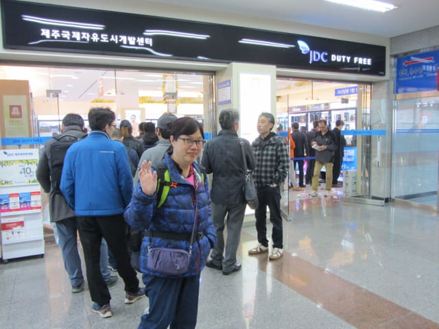
走出大樓, 按標示走往登船口。
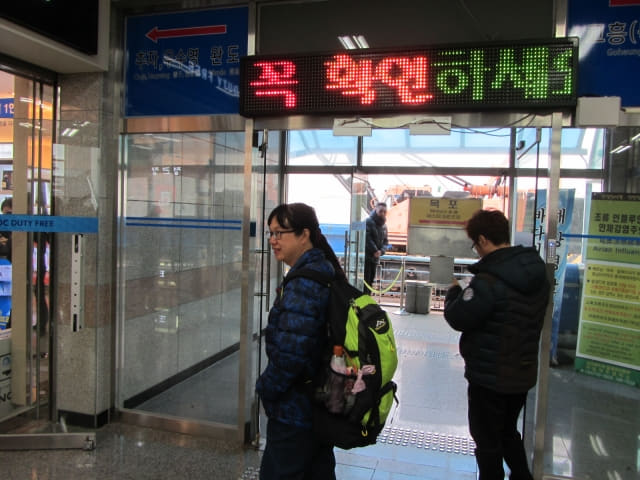
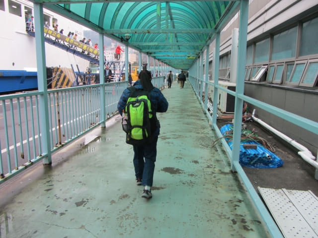
搭乘巴士往輪船登船口
一條長長的人龍正在排隊, 看來還要搭乘巴士往輪船的登船口。
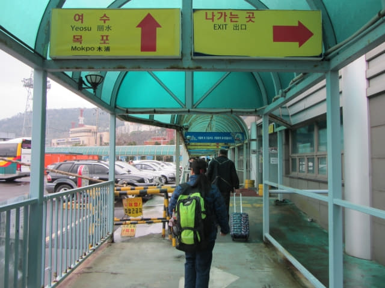
等了一會, 一輛巴士駛來接載旅客往登船口。
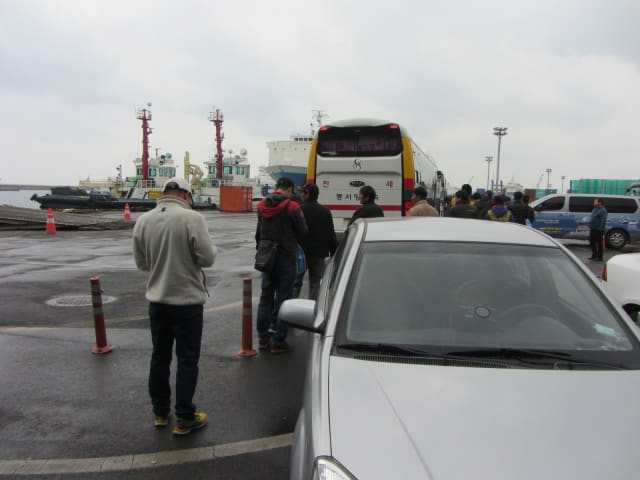
旅客太多, 我們要等待下一班的巴士, 看來除了我們, 都是韓國當地的市民。
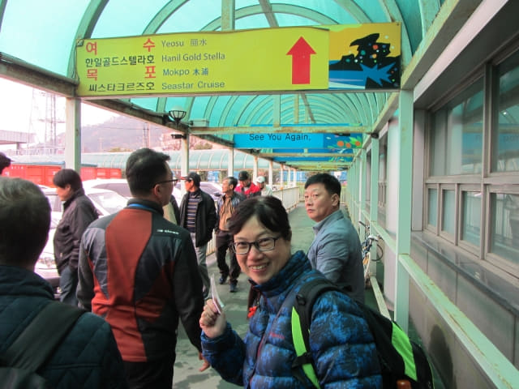
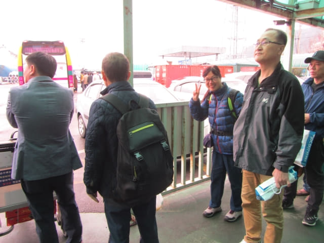
又等了約五分鐘, 另一輛巴士駛來接載我們和其他旅客往登船口。
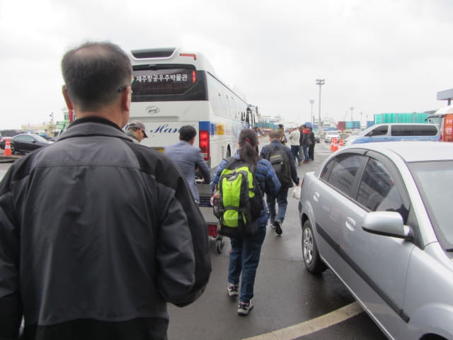
巴士沿碼頭行駛約三分鐘便來到登船口。下了車, 登船前還要再一次檢查護照, 數一數, 總共檢查了三次護照, 比乘飛機還嚴密很多! 接著沿樓梯走上渡輪。幸好這時天空只飄著毛毛雨, 不然便狼狽了! 最重要是不能拍照留下這段回憶。
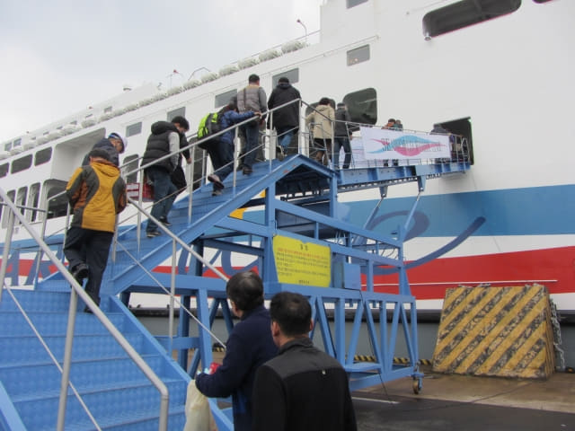
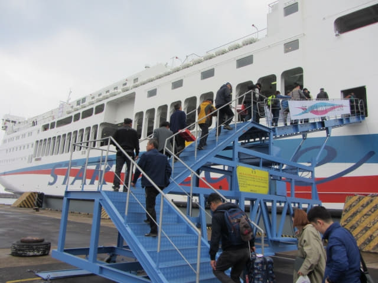
輪船的名稱是 STAR CRUISE, 或 SEA STAR CRUISE, 是一艘很大的輪船。
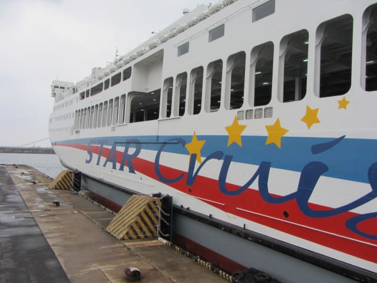
就這樣登上了往木浦輪船 4F 甲板上的走廊。
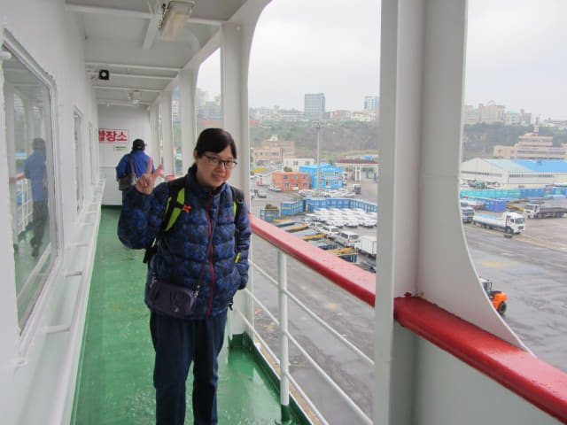
我們搭乘這一班巴士的所有乘客都續一登上了輪船。
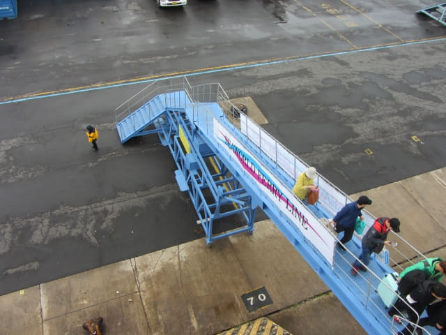
從輪船甲板上眺望濟州港。
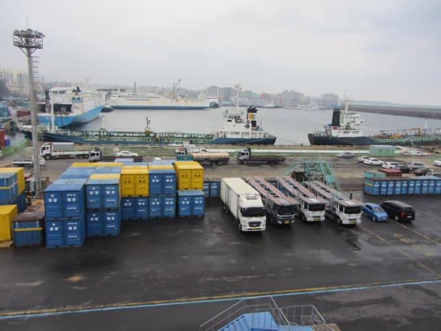
看不到濟州港旅客碼頭大樓, 剛好給那艘停泊在碼頭的藍色輪船阻擋了。
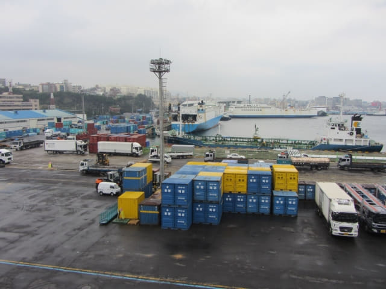
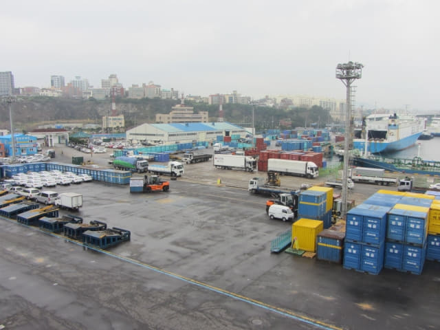
下一班的巴士又從濟州港旅客碼頭大樓接載另一車旅客來登船口, 然後很有秩序的續一沿樓梯登上輪船。看來真是很多旅客呢!
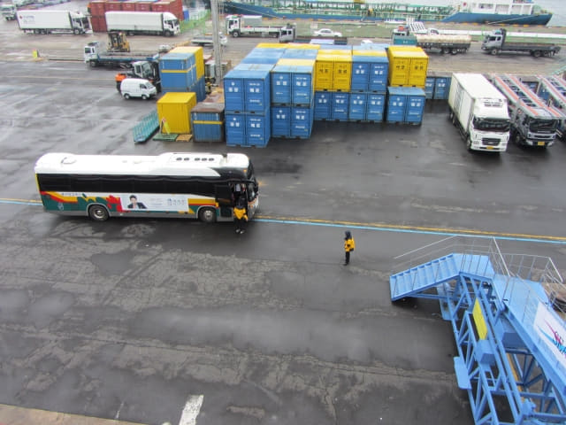
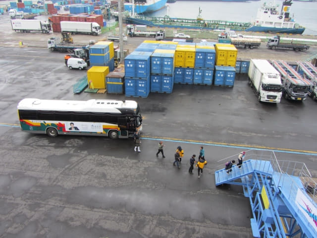
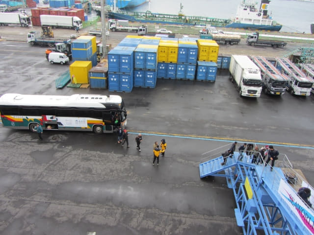
在甲板走廊看了一會, 正式進入輪船。我們給編排到413室, 是最便宜的標準房間, 應該不難找的。
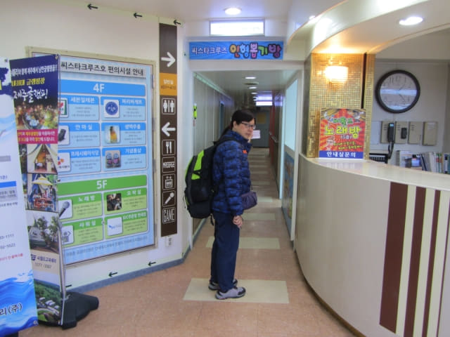
走廊兩旁的房間外的地上都是鞋子, 我們的房間應該就在這一層。
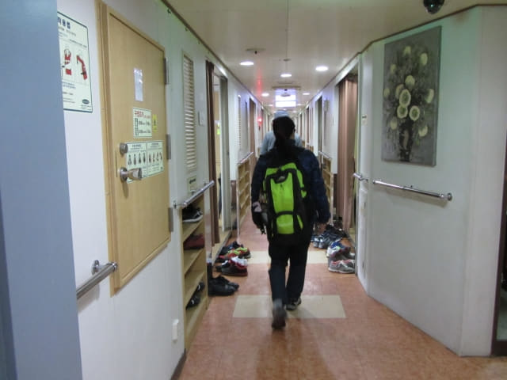
Sea Star Cruise 標準房間
很容易便找到了我們被編排到的413號房間。這是 Sea Star Cruise 最便宜的標準房間, 最多只可同時容納十位乘客。這麼大的房間, 只容納十位乘客, 真是十分舒適。我們選擇了其中一個牆角, 這樣便不會被其他乘客打擾。我大部份時間都在甲板上欣賞風景, 其實什麼房間也不重要。
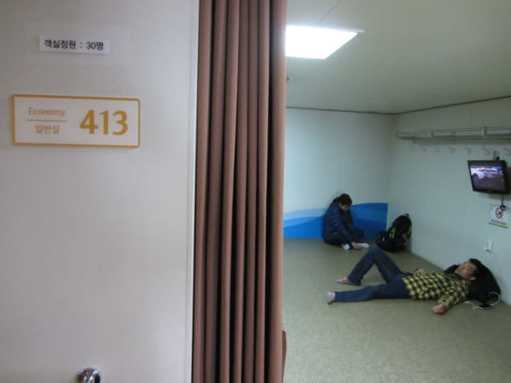
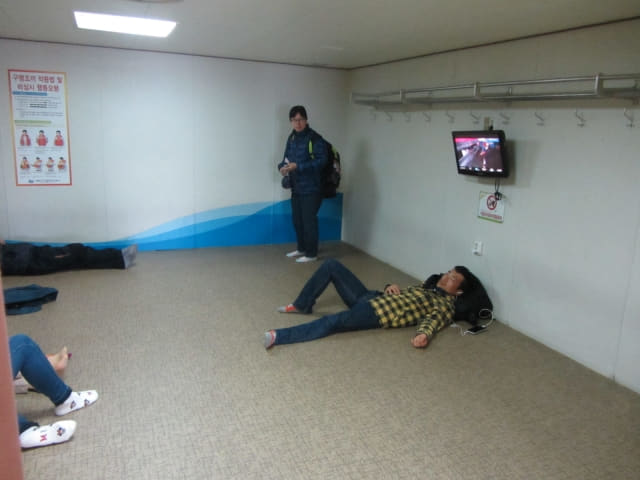
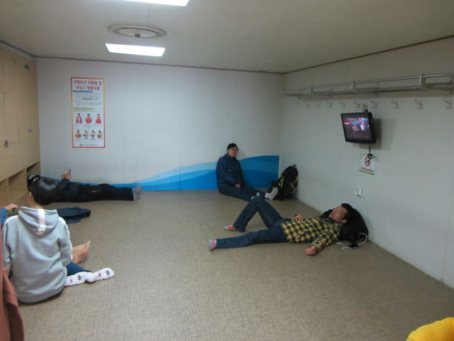